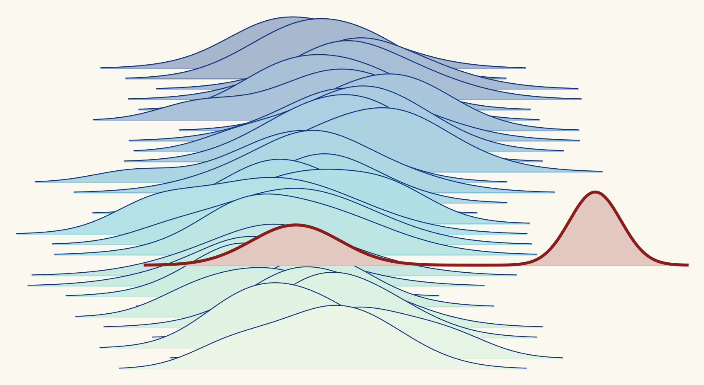

Every benchmark score deserves an asterisk*
We review the benchmarks used to measure AI progress, and publish what we find with the evidence to check it.

Our mission
Benchmark scores shape which AI models get used and how fast people think AI is improving. Few are ever checked outside the team that built them.
We evaluate every benchmark against a rubric, analyze agent runs, and publish our findings publicly. We hope our efforts increase scrutiny of benchmarks and help people understand common reward hacks and failure modes of models.
Our principles
A public rubric
We apply Epoch AI's published benchmark review rubric as written. Read the methodology.
Evidence for every finding
Every error we count points to a file and line, a reproduction or a log. Suspicions without evidence are listed but not counted.
Reproducible
Each review ships the scripts that fetch the public data and rebuild our counts.
A right of reply
Developers can respond to any review, and their response is linked from it. Corrections are made in the open.
Independent
We don't review benchmarks we helped build, and we are not affiliated with any benchmark we review.
Clear about limits
Each review says what we could not inspect and how the reading was divided between people and tools.
Help us check more benchmarks
Contribute a review
Write a review to our rubric and evidence standard, and we will check it and publish it.
How to contribute →Get in touch
Corrections, developer responses and questions welcome at
reviews@openbenchmarkreview.org